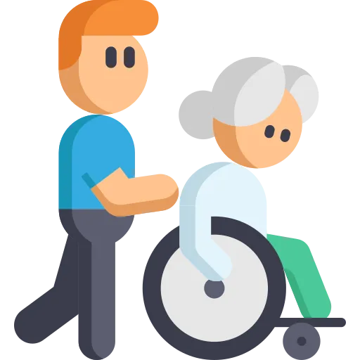

Which side you stand on, which leg goes first, and why the patient who has not moved in three days is the sickest one on your list.
This topic looks like common sense. It is full of specific rules that do not feel like rules.
Points go in four places.
You stand on the weaker side. Always.
That is the side they will fall toward, and it is the side that cannot catch them. The cane goes in the other hand, so the strong arm and the weak leg work together.
Bed rest blunts the reflex that holds your blood pressure up when you stand.
So the sequence is lie, sit, dangle, stand. Skipping the dangle is how a patient goes down in the first three seconds of a transfer.
Good body mechanics do not make a heavy patient safe to lift by hand.
Above about 35 pounds of patient weight, equipment and extra people are the answer. Nurse injuries end careers, and the patient goes down with you.
It is a whole-body illness with a clock on it.
Clots, pneumonia, pressure injuries, constipation, contractures and bone loss all start within days. The intervention is almost always to get them moving sooner.
Four tasks carry this topic. For each one you should be able to say four things with the book closed.
What it is. What you set up first. The rule that decides the answer. And the error people make.
| Task | What it is | Set up first | The deciding rule | The error |
|---|---|---|---|---|
| Transfer | Moving a patient between bed, chair, commode or stretcher. | Bed low, wheels locked, chair on the strong side, gait belt on, shoes on. | Dangle before standing. Stand on the weaker side. | Pulling under the arms, which dislocates shoulders. |
| Ambulating with a device | Walking with a cane, walker or crutches. | Fit and measure the device. Clear the path. Belt on. | Cane opposite the weak leg. Weak leg moves with the device. | Putting the cane on the injured side. |
| Positioning | Placing the body to protect airway, skin, joints and circulation. | Know why you are positioning before you choose one. | The position follows the problem, not the routine. | Full 90-degree side-lying, which crushes the trochanter. |
| Preventing immobility harm | Everything that goes wrong when a body stops moving. | A turning schedule, a skin risk score, and early ambulation. | Reposition every 2 hours in bed, every hour in a chair. | Treating early mobility as optional once the patient is comfortable. |
Four rows on one index card, by hand. Then cover the last two columns and rebuild them from memory. Those two columns are the exam.
Discrimination axis: is this a lift, or is it a slide.
Lifting is what injures backs. Sliding, rolling and pivoting are what you do instead.
Manual lifting of more than about 35 pounds of patient weight is unsafe no matter how good your form is.
Past that you use a friction-reducing sheet, a slide board, a sit-to-stand device, a ceiling or floor lift, or more people.
Never drag a patient across a sheet. Friction and shear tear skin, and shear is what turns pressure into a deep injury.
Never lift a patient by the arms or under the axillae. That is how shoulders dislocate.
Discrimination axis: how much can this patient do themselves.
Assess that before you choose the method. It decides everything that follows.
Two rules that look contradictory until you see the logic.
Same principle both times. The weak side gets your help. The strong side does the work.
A drop of 20 mmHg systolic or 10 mmHg diastolic on standing, often with a rise in heart rate.
If the patient goes pale, says the room is moving, or their pressure drops, sit them straight back down. Do not walk them through it.
Risk is highest after bed rest, after opioids or antihypertensives, and in anyone dehydrated or bleeding.
Discrimination axis: how much weight has to come off the leg.
A cane offloads a little. A walker offloads more. Crutches can take everything.
Memory: cane opposite the affected leg.
The error: walking too far behind it, which pulls the patient forward.
The danger: leaning on the pads compresses nerves and causes weakness in the hands.
Memory: up with the good, down with the bad.
The gait follows the weight bearing order, so read the order before you pick the gait.
Do not memorise positions. Memorise the problem each one answers.
| Position | What it looks like | When you use it |
|---|---|---|
| High Fowler | Head of bed 60 to 90 degrees | Breathlessness, eating, feeding through a tube, after some eye and head surgery |
| Semi-Fowler | Head of bed 30 to 45 degrees | Preventing aspiration and ventilator pneumonia, after most abdominal surgery, raised intracranial pressure |
| Supine | Flat on the back | Spinal alignment, after a spinal anesthetic in some protocols, resting position |
| Prone | Face down | Improving oxygenation in severe respiratory failure, and preventing hip flexion contracture |
| Lateral, 30 degrees | Side-lying but tilted, supported with pillows | Routine repositioning, because it keeps weight off the greater trochanter |
| Sims | Semi-prone on the left side, upper knee flexed | Enemas, rectal examination, and drainage from the mouth of an unconscious patient |
| Trendelenburg | Flat with the feet raised above the head | Central line insertion and air embolism. It is not the routine answer for shock |
| Modified Trendelenburg | Flat with the legs raised | Hypotension, to return volume centrally without raising intracranial pressure |
Two different 30-degree rules, and both are about shear.
When aspiration risk requires a higher head of bed, aspiration wins. Then you protect the skin some other way.
Every system suffers, and most of it starts within days.
Questions here give you a complication and ask for the prevention.
| System | What goes wrong | What you do |
|---|---|---|
| Circulation | Venous stasis, deep vein thrombosis, pulmonary embolism, orthostatic drops | Early ambulation, ankle pumps, compression devices, prophylactic anticoagulation as ordered |
| Lungs | Secretions pool, atelectasis, pneumonia | Turn, cough, deep breathe, incentive spirometer, sit them upright, get them walking |
| Skin | Pressure injury over bony points, shear damage, moisture damage | Reposition on a schedule, offload heels, keep skin dry, support surfaces |
| Muscle and joint | Strength falls fast, contractures form, foot drop | Range of motion at least twice daily, splints and foot support, sit them out of bed |
| Bone | Calcium leaves the bone, so it weakens and calcium rises in the blood | Weight bearing where possible, hydration, movement |
| Gut | Slow transit, constipation, poor appetite | Fluid, fibre, activity, a toileting routine, stool softeners if ordered |
| Kidney and bladder | Urine pools when lying flat, so stasis, stones and infection follow | Upright to void, fluids, and get the catheter out early |
| Mind | Sleep disruption, low mood, disorientation, loss of independence | Day and night structure, activity, involvement in care, family contact |
Getting the patient up. It answers seven of the eight rows above at once.
So when a question asks how to prevent a complication of immobility and one option is early ambulation or sitting out of bed, that option is usually correct.
Bed rest is a treatment with side effects. It needs a reason, and the reason needs reviewing daily.
Discrimination axis: can you see the base of the wound.
That question decides the stage, and staging decides the plan.
| Stage | What you see | The tell |
|---|---|---|
| Stage 1 | Intact skin with redness that does not blanch when pressed | Skin is unbroken. In darker skin, look for a change in colour, temperature or firmness |
| Stage 2 | Partial thickness loss. A shallow open ulcer or an intact or ruptured blister | Pink and moist. No slough, no fat visible |
| Stage 3 | Full thickness loss. Fat is visible, and it may tunnel or undermine | You can see fat, but not bone, tendon or muscle |
| Stage 4 | Full thickness loss exposing bone, tendon, muscle or cartilage | Structure is visible or directly palpable |
| Unstageable | Base covered by slough or eschar | You cannot see the bottom, so you cannot stage it until it is debrided |
| Deep tissue injury | Persistent deep red, maroon or purple intact skin, or a blood-filled blister | Damage started underneath. It can open up quickly |
Never massage a reddened area over a bony point. It damages the tissue underneath.
Bone under skin with nothing in between. Sacrum, heels, hips, elbows, shoulder blades, back of the head.
In a side-lying patient the ear and the greater trochanter. In anyone on a device, the skin under the tubing, the mask or the cast edge.
The heel and the sacrum account for most of what you will see.
Every option here is something a nurse might reasonably do. Order is the whole question.
Learn this list. It eliminates two options in most questions on this topic.
Posterior approach precautions come up constantly, so keep them separate in your head.
These should be automatic. If you have to reason toward one, it is not learned yet.
| Number | Meaning |
|---|---|
| 35 pounds | Above this much patient weight, use equipment or more staff rather than lifting |
| 1 to 5 minutes | How long you dangle a patient on the edge of the bed before standing |
| 20 and 10 mmHg | Systolic and diastolic drops on standing that define orthostatic hypotension |
| 6 inches | How far to the side the cane tip and the crutch tips are placed |
| 15 to 30 degrees | Elbow flexion for a correctly fitted cane or walker |
| 2 to 3 finger widths | Gap between the crutch pad and the axilla |
| 20 to 30 degrees | Elbow flexion at the crutch handgrips |
| Every 2 hours | Repositioning interval in bed |
| Every 1 hour | Repositioning interval in a chair, with weight shifts every 15 minutes |
| 30 degrees | Both the head of bed ceiling for skin protection and the side-lying tilt |
| 18 or less | Braden score that flags pressure injury risk |
| 90 degrees | Hip flexion limit after posterior hip replacement |
Twelve rows on the back of the index card from section 02. Test yourself on the action, not the number. A stem gives you the number and asks what you do.
Reading this again will not move your score. Producing it will. Everything below is done with the page shut.
Pick any of the four tasks from section 02. Without looking, say what it is, what you set up first, the deciding rule, and the error people make.
Then do the other three. If you can, you are ready. If you cannot, you know which section to reopen.
Questions with full rationales covering safe patient handling, transfers, assistive devices, stairs, positioning, the complications of immobility and pressure injury staging. Choose Practice Mode for instant feedback or Exam Mode to simulate test conditions.
You stand = on the weaker side, because that is where they fall
The chair goes = on the stronger side, because that side does the work
Dangle = 1 to 5 minutes before standing, every time
Cane = opposite hand, moves with the weak leg
Stairs = up with the good, down with the bad
Turn = every 2 hours in bed, every hour in a chair